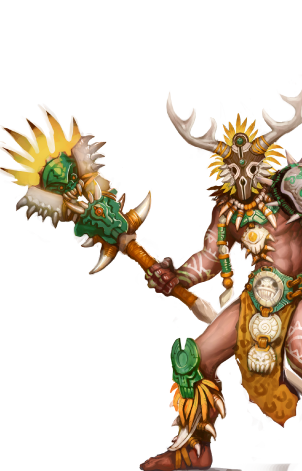

Непокорные Племена
Кочевые племена орков – разобщенный, но гордый народ, издревле подвергавшийся гонениям. Они известны как яростные воины, которых поддерживают могущественные шаманы. Их «магия крови», черпающая силу в хаосе и связанная с демонами, от которых произошли орки, и заклинания шаманов, усиленные их связью с предками, имеют ограниченный, но весьма разрушительный эффект, особенно если помножить его на решительность орков.
Другие имена: орки, полудемоны
Основные цвета: кроваво-красный, коричневый
Страна/Королевство: степи Ранаара (северо-восток), пустыня Сахаары (юго-восток) и Острова Пао (юго-восток)
Столица: нет (ведут кочевой образ жизни)
Религия
У орков нет бога. Оркам не нужен бог. И потому шаманы почитают лишь Мать-Землю и Отца-Небо, два могущественных начала, с которыми они встречаются, когда путешествуют по «Миру снов». Мудрецы из других фракций полагают, что это – воплощения Илата и Силанны, Богов-Драконов воздуха и земли, либо же иные ипостаси Асхи.
Магия
Орки были созданы и порабощены магами, отсюда их ненависть к волшебству. Но они не глупцы и знают, что магия существует и что между видимым, материальным миром и миром незримым, миром духов, есть множество связей. Орки – рукотворная раса, поэтому они не принадлежат к естественному порядку Асхи и не имеют связи с Богами-Драконами. Их магия черпает силу не в поклонении драконам и служащим им духам, но это и не результат учения и практики, как это происходит у магов. Вероятнее всего, кровь демонов, что течет в их жилах, дает им ограниченный доступ к магии хаоса.
Шаманы орков практикуют ритуалы, основанные на крови, а для того, чтобы им покорялись более сложные и могучие чары, привлекают других орков и гоблинов. Иногда они даже не интересуются их желаниями, а иногда крови нужно столько, что некоторые участники ритуалов расстаются с жизнью...